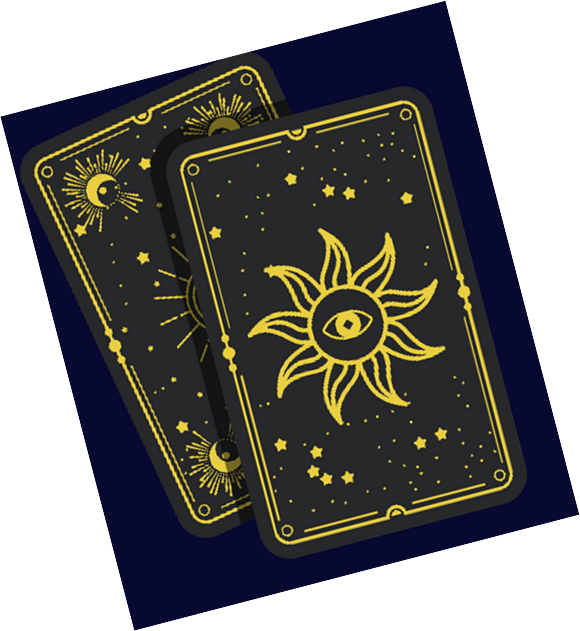

Mes 10 engagements
- Je t’accueille avec respect, sans jugement ni discrimination.
- Je pratique dans la bienveillance et ne cherche jamais à influencer tes choix.
- Je présente clairement la nature, la durée et le tarif de mes services.
- Je rappelle que la tarologie n’est pas une science exacte ni un substitut médical, psychologique, juridique ou financier.
- Je garantis la confidentialité de nos échanges et le respect de tes données personnelles (RGPD).
- Je reste attentive aux personnes vulnérables et oriente vers des professionnels compétents si nécessaire.
- Je ne propose aucune prédiction alarmiste ou fataliste.
- Je respecte ton libre arbitre : tes décisions t’appartiennent toujours.
- Je m’engage à rester intègre : pas de manipulation, de dépendance ni de vente abusive.
- Je pratique avec authenticité, dans une intention sincère d’accompagnement et d’ouverture.